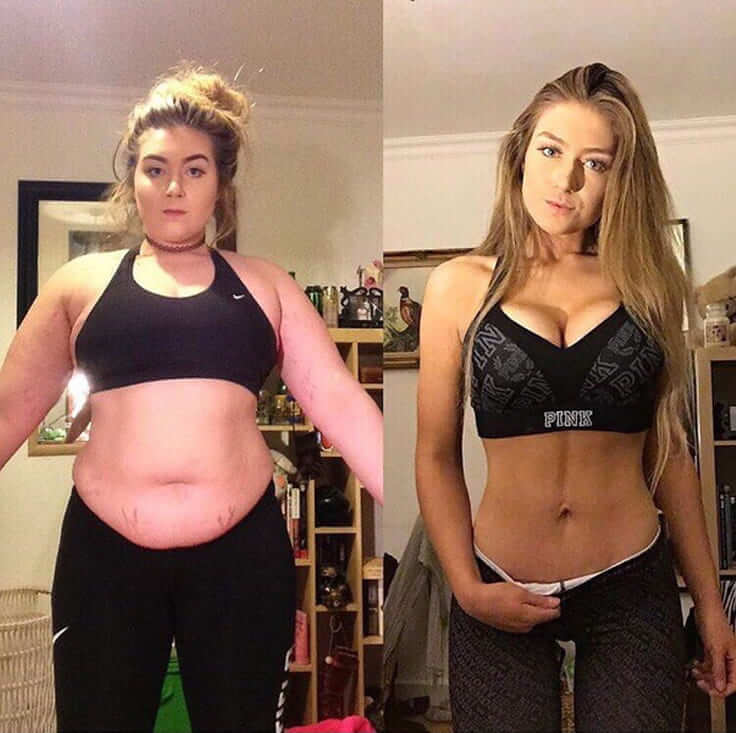
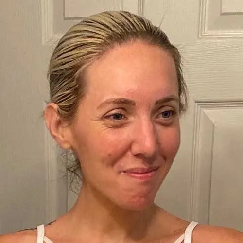
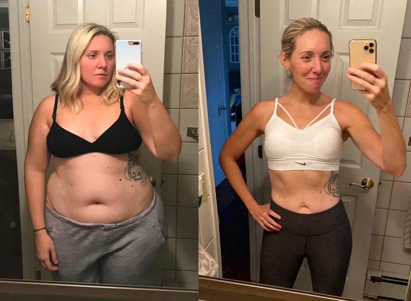
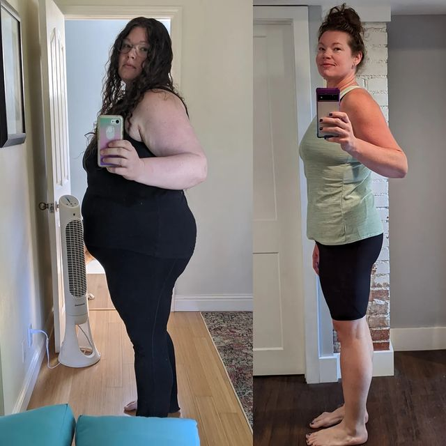

“In high school, I hit 85 kilograms, but I felt blessed with natural self-confidence”,
Isabelle told Women’s Health.
“Everyone knew me to be that big girl, but I always held my head high.”
“Everyone's weight-loss journey is different until they discover the easiest way to
get slim”
BY EDITORS OF WOMEN’S HEALTH
Losing weight remains a primary concern for women, spanning generations from our grandmothers to us today. Last year, weight loss (associated with being a better person) was the top New Year’s resolution, according to a Women’s Health poll, and the year before, it took second place.
However, losing weight can be tough when one lacks the knowledge for the right solution. The challenges everyone faces differ but with the easy way to get slim, the journey becomes smooth for all women.
Women’s Health has collected 3 of the most successful weight loss stories of the year.
Isabelle Cooper lost 34 kilograms without going on a diet
However, Isabelle, who says food is her “bestie”, gained more weight after she gave birth to her daughter in 2014. She tried losing weight and eating fewer calories, but at some point, she always gave up. “I felt stuck in the yo-yo effect,” she says. I could shed the first 10 kilos, only to regain 15 kilos afterward. Isabelle’s life turned upside down when her daughter said that a classmate of hers called her mother “fattie”.
She looked SO UPSET, although she was trying to act like it wasn’t a big deal.“It hit me that my child is suffering and being laughed at because of my body”, Isabelle shares with tears in her eyes. “That determined me to lose the excess weight, I didn’t want my daughter to feel that way. I consulted a nutritionist who recommended an all-natural supplement to slim down effortlessly, avoiding restrictive diets. Dr.Richards explained to me that UTHIN Triple Slim speeds up metabolism more and more with every single day and keeps it fast in the long run. She strongly advised me to start The 30-Day UTHIN Triple Slim Program ASAP. If you feel like eating a burger - do it - you’re a human being, you cannot resist the temptations till the rest of your life,” Dr. Richards told me. “With UTHIN Triple Slim, you can afford it because it’s proven that the supplement speeds up your metabolism x 2.”
“I cried”, Isabelle says. “I lost the first 10 kilos in 1 week! Reaching
the 30th day was an amazing feeling! I have lost 19
kilos,
and my fat butt looked smaller and
well-rounded!”
“I realized that I’ve got to never quit and started taking a new box of UTHIN
Triple Slim. You should
hear this: after the second pack, I have lost 34 kilograms!”
Isabelle also started documenting her weight loss journey with UTHIN Triple Slim:

“Having your child be proud of you is an incredible feeling,” she says. “It’s amazing, and I was able to show her that if you set a goal you can achieve it — you just have to find the right way!”
Zoe Fletcher Has Lost 18 Kilograms within 1 month without going to the gym

“I felt like a stranger in my own body. I didn’t recognize my reflection in the mirror,
and when I saw photos of myself,
I felt disgusted with the love handles spilling over the jeans,”
she admitted.
Zoe Fletcher, once an avid athlete, found herself stopping her workout routine after getting married. Balancing time with her partner, work, and household made maintaining a gym regimen seem impossible. That’s how she gained 18 kg, reaching her peak weight of 78 kg. Though she had tried for 3 years to lose weight on intermittent fasting, keto, and low-carb diet while tracking her calories on different apps, Zoe did not make much progress.
“It was hard for me to stay consistent. I stuck to a diet for a couple of weeks, but dinners with my husband and daughter or friends' gatherings derailed me, and I ended up eating everything,” says Zoe. She also starts thinking of getting back to the gym. “I realized that I used to do something that made me miserable and did not want to do it again. I preferred spending my time in a worthwhile way - with my family and friends. Finally, an old friend of mine, an ex-personal trainer, told me about a 30-day weight loss program that doesn’t involve any training.”
“The thing is that UTHIN Triple Slim speeds up your metabolism, burns the fat fast, and suppresses your appetite preventing you from overeating,” my old friend Peter told me. “And you know what?!” Zoe exclaims. “I lost 18 kilograms in just 1 month! 18 kilograms less, no love handles, and a tight waist without stepping foot inside of a gym, without the stupid keto, and bullshit calorie-counting apps!!”

“The thing I hear from people is that I look like a new person,” Zoe wrote on Instagram recently. “I agree, but more important than that, I FEEL like a new person!!”
Georgia Chambers lost 23 kilograms by curbing her appetite
“I was eating fast food just to have a break in my day. I rushed into the lunch break to get
chicken burgers and fries from McDonald’s or Burger King.
Dinner was a lot of pasta or frozen pizza”, writes Georgia.
Georgia Chambers wrote about her weight-loss journey for Women’s Health stating that she had always had unhealthy eating habits and after stressful times at work, they only got worse. One day, during my lunch break, I was sitting in my car at a park near the office listening to a podcast on how to lose weight. And while I was listening, I was eating a Burger King chicken sandwich with a large portion of French fries. Then I heard a lady sharing her inspiring story about how she lost weight easily with UTHIN Triple Slim, which curbed her food cravings.
The lady spoke at length about UTHIN Triple Slim saying how it treats slow metabolism, speeding it up in the long run, while also suppressing the appetite. I knew I couldn’t go on this way, wanting to make a change, but never taking any action. I decided right then and there to order a few boxes of UTHIN Triple Slim from the link below the video. I started taking UTHIN Triple Slim religiously, every single day and the change happened easily - in 1 month and a bit more, I had already lost 23 kilograms and I knew I looked amazing - going from XL to M clothing size. Uthin Triple Slim has helped me manage my cravings without completely giving up the foods I enjoy, like burgers. It's all about balance and finding the easy solution to get slim!

Losing excess weight has brought back an inner self-confidence that I had lost over the years. This new inner strength is now spreading to other areas of my life and I no longer fear change. However, I think the internal changes are the most important. As the motto of UTHIN says: “It all starts from within”.
AmyTheClemente
Wow, these stories are truly inspiring! It's amazing to see how UTHIN has helped these women achieve such incredible weight loss results without the diets and the workouts.
Hannakitten
Georgia's story resonates with me so much. It's easy to fall into unhealthy eating habits, particularly during stressful times.
Klara Chi
I hate sports, training, gyms, everything, hahaha. It’s so relatable to hear about struggles with a gym routine.
Sarah Ross
I've been taking triple slim for 3 days, and I can tell you I don’t feel hungry at all. Plus, my previously bloated stomach now looks flattened.
Emily The Big
As a mother myself, I don’t want to see my child upset because of my excess kilograms. Isabelle’s story gave me motivation to make positive changes in my own life and take my uthin regularly.
Erika Lee Lee
Thanks to Uthin, I increased my metabolism and feel good even when wearing tight clothes. It’s 100% life-changing.
Lola
Love this product, feelin’ sexy again :)))